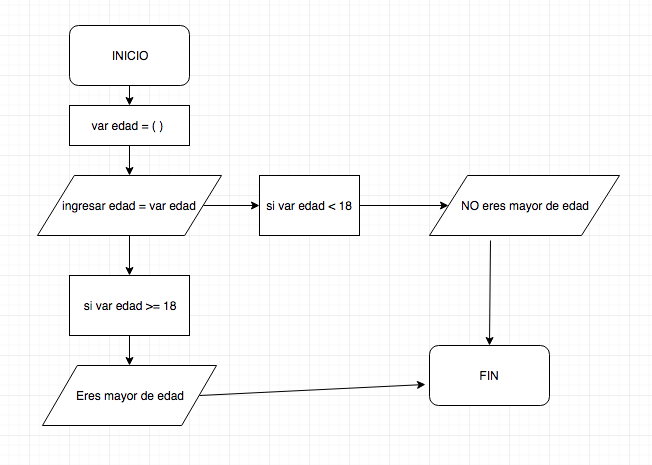
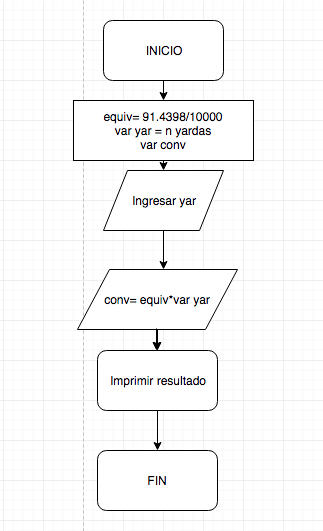
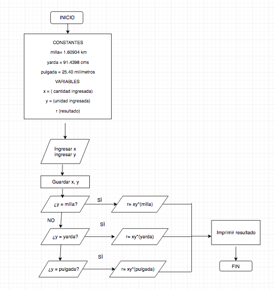

Problemas
I. Realice el diagrama de flujo de un sistema que dada la edad de un usuario de entrada diga si el usuario es menor o mayor de edad.

II. Escribir el pseudocógido de la conversión de Millas a Km
1. INICIO
2. Ingresar variables y constantes
CONSTANTE: 1Yarda= 1.60934 Km
VARIABLE: x=( )
3. Ingresar x (cantidad de yardas a convertir)
4. Hacer operación
5. Imprimir resultado
6. FIN
III. Conversión de unidades de distancia
- 1 Yarda = 91.4398 cm
Realiza el diagrama de flujo que solicite una cantidad en yardas y lo convierta a kilómetros e imprima el resultado en pantalla.
0. INICIO
1. Declarar variables y constantes
const= 91.4398/10000 —> Conversión de yardas a KM
var y = n yardas
2. Preguntar la cantidad de yardas: ingresar var y
3. Hacer operación: const*vary
4. Arrojar-imprimir resultado —
5. FIN

IV. Conversión de unidades de distancia
1 milla= 1.60934 km
1 yarda = 91.4398 cms
1 pulgada = 25.40 milímetros
1. INICIO
2. Declarar variables y constantes
CONSTANTES:
- 1 milla= 1.60934 km
- 1 yarda = 91.4398 cms
- 1 pulgada = 25.40 milímetros
VARIABLES
var x = (cantidad a convertir)
3. Ingresar cantidad y unidad recibida
var x = ( )
4. Ingresar tipo de unidad para la conversión
5. Hacer operaciones
6. Imprimir resultado
7. FIN
